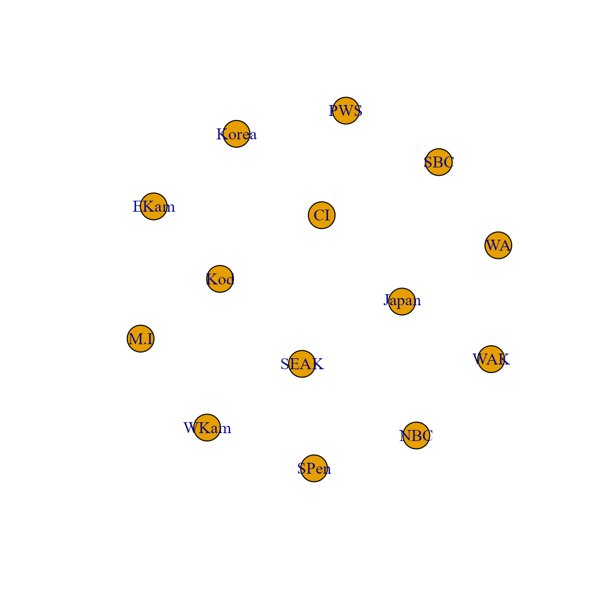

Simultaneous autoregressive process
James T. Thorson
Source:vignettes/simultaneous_autoregressive_process.Rmd
simultaneous_autoregressive_process.RmdtinyVAST is an R package for fitting vector
autoregressive spatio-temporal (VAST) models using a minimal and
user-friendly interface. We here show how it can fit a multivariate
second-order autoregressive (AR2) model including spatial correlations
using a simultaneous autoregressive (SAR) process specified using
igraph.
To do so, we first load salmong returns, and remove 0s to allow comparison between Tweedie and lognormal distributions.
data( salmon_returns )
# Transform data
salmon_returns$Biomass_nozeros = ifelse( salmon_returns$Biomass==0,
NA, salmon_returns$Biomass )
Data = na.omit(salmon_returns)We first explore an AR2 process, with independent variation among regions. This model shows a substantial first-order autocorrelation for sockeye and chum, and substantial second-order autocorrelation for pink salmon. An AR(2) process is stationary if \(\phi_1 + \phi_2 < 1\) and \(\phi_2 - \phi_1 < 1\), and this stationarity criterion suggests that each time-series is close to (but not quite) nonstationary.
# Define graph for SAR process
unconnected_graph = make_empty_graph( nlevels(Data$Region) )
V(unconnected_graph)$name = levels(Data$Region)
plot(unconnected_graph)
# Define SEM for AR2 process
dsem = "
sockeye -> sockeye, -1, lag1_sockeye
sockeye -> sockeye, -2, lag2_sockeye
pink -> pink, -1, lag1_pink
pink -> pink, -2, lag2_pink
chum -> chum, -1, lag1_chum
chum -> chum, -2, lag2_chum
"
# Fit tinyVAST model
mytiny0 = tinyVAST(
formula = Biomass_nozeros ~ 0 + Species + Region,
data = Data,
dsem = dsem,
variable_column = "Species",
time_column = "Year",
space_column = "Region",
distribution_column = "Species",
family = list( "chum" = lognormal(),
"pink" = lognormal(),
"sockeye" = lognormal() ),
spatial_graph = unconnected_graph,
control = tinyVASTcontrol( profile="alpha_j" ) )
#> Warning in nlminb(start = opt$par, objective = obj$fn, gradient = obj$gr, :
#> NA/NaN function evaluation
# Summarize output
Summary = summary(mytiny0, what="dsem")
knitr::kable( Summary, digits=3)| heads | to | from | parameter | start | lag | Estimate | Std_Error | z_value | p_value |
|---|---|---|---|---|---|---|---|---|---|
| 1 | sockeye | sockeye | 1 | NA | -1 | 0.808 | 0.059 | 13.710 | 0.000 |
| 1 | sockeye | sockeye | 2 | NA | -2 | 0.195 | 0.059 | 3.307 | 0.001 |
| 1 | pink | pink | 3 | NA | -1 | 0.050 | 0.019 | 2.640 | 0.008 |
| 1 | pink | pink | 4 | NA | -2 | 0.882 | 0.022 | 39.933 | 0.000 |
| 1 | chum | chum | 5 | NA | -1 | 0.675 | 0.103 | 6.582 | 0.000 |
| 1 | chum | chum | 6 | NA | -2 | 0.292 | 0.100 | 2.939 | 0.003 |
| 2 | pink | pink | 7 | NA | 0 | 0.648 | 0.039 | 16.766 | 0.000 |
| 2 | chum | chum | 8 | NA | 0 | 0.294 | 0.035 | 8.349 | 0.000 |
| 2 | sockeye | sockeye | 9 | NA | 0 | 0.421 | 0.036 | 11.622 | 0.000 |
We also explore an SAR process for adjacency among regions
# Define graph for SAR process
adjacency_graph = make_graph( ~ Korea - Japan - M.I - WKam - EKam -
WAK - SPen - Kod - CI - PWS -
SEAK - NBC - SBC - WA )
plot(adjacency_graph)
# Fit tinyVAST model
mytiny = tinyVAST(
formula = Biomass_nozeros ~ 0 + Species + Region,
data = Data,
dsem = dsem,
variable_column = "Species",
time_column = "Year",
space_column = "Region",
distribution_column = "Species",
family = list( "chum" = lognormal(),
"pink" = lognormal(),
"sockeye" = lognormal() ),
spatial_graph = adjacency_graph,
control = tinyVASTcontrol( profile="alpha_j" ) )
#> Warning in nlminb(start = opt$par, objective = obj$fn, gradient = obj$gr, :
#> NA/NaN function evaluation
# Summarize output
Summary = summary(mytiny, what="dsem")
knitr::kable( Summary, digits=3)| heads | to | from | parameter | start | lag | Estimate | Std_Error | z_value | p_value |
|---|---|---|---|---|---|---|---|---|---|
| 1 | sockeye | sockeye | 1 | NA | -1 | 1.505 | 0.081 | 18.529 | 0.000 |
| 1 | sockeye | sockeye | 2 | NA | -2 | -0.502 | 0.082 | -6.113 | 0.000 |
| 1 | pink | pink | 3 | NA | -1 | 0.010 | 0.009 | 1.093 | 0.274 |
| 1 | pink | pink | 4 | NA | -2 | 0.978 | 0.010 | 100.558 | 0.000 |
| 1 | chum | chum | 5 | NA | -1 | 1.685 | 0.113 | 14.978 | 0.000 |
| 1 | chum | chum | 6 | NA | -2 | -0.688 | 0.113 | -6.108 | 0.000 |
| 2 | pink | pink | 7 | NA | 0 | 0.575 | 0.041 | 14.158 | 0.000 |
| 2 | chum | chum | 8 | NA | 0 | 0.077 | 0.023 | 3.421 | 0.001 |
| 2 | sockeye | sockeye | 9 | NA | 0 | 0.232 | 0.029 | 7.977 | 0.000 |
We can use AIC to compare these two models. This comparison suggests that spatial adjancency is not a parsimonious way to describe correlations among time-series.
# AIC for unconnected time-series
AIC(mytiny0)
#> [1] 49086.47
# AIC for SAR spatial variation
AIC(mytiny)
#> [1] 49755.91Finally, we can plot observations and predictions for the selected model
# Compile long-form dataframe of observations and predictions
Resid = rbind( cbind(Data[,c('Species','Year','Region','Biomass_nozeros')], "Which"="Obs"),
cbind(Data[,c('Species','Year','Region')], "Biomass_nozeros"=predict(mytiny0,Data), "Which"="Pred") )
# plot using ggplot
library(ggplot2)
ggplot( data=Resid, aes(x=Year, y=Biomass_nozeros, col=Which) ) + # , group=yhat.id
geom_line() +
facet_grid( rows=vars(Region), cols=vars(Species), scales="free" ) +
scale_y_continuous(trans='log') #